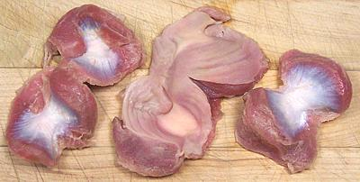
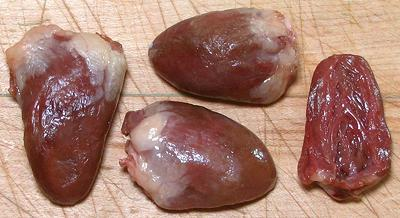
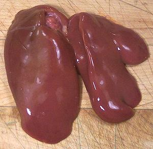

Chicken Giblets
"Giblets" is a culinary term for certain internal parts of a bird
that are desirable for use in recipes. For chickens, this usually
means Heart, Gizzard and Liver. The neck, included with turkeys and
geese, is usually not included. Today, it is not common for giblets
to be included inside a market chicken, as they almost always are
with Turkey, but they are generally sold separately. Some other
edible innards, such as Rooster Testicles,
are technically giblets but are not included within the North American
definition.
More on Chickens.

Gizzards
In life the gizzard is a thick walled muscular sack full of rocks.
The chicken uses it as a ball mill to grind up everything it eats. It is
"extra dark" meat with a more intense flavor than any other muscle in
the chicken except the heart. Chicken processors cut the gizzards open,
clean them and pack them in trays. Generally they are shipped frozen,
but may be thawed at the market. The photo shows typical
gizzards, inside and outside views.
Gizzards are costly gourmet items in many countries but in the North
America, few people know what to do with them and others just "don't eat
innards" so there's plenty at attractive prices for ethnic markets and
more adventurous eaters.
Buying:
Find them in ethnic markets, particularly those
serving Mexican or Central and South American communities. In Southern
California they're generally packed in foam plastic trays weighing about
1-1/4 pounds. Rarely, they are packed with hearts, not a problem
because hearts are used similarly.
Yield:
About as close to 100% as you can get.
Prep:
Rinse gizzards, examine them and scrape off
anything that's yellowish or stringy. Generally you'll cut them into
bite size pieces cutting through the thin parts. Individual gizzards
vary widely in size and shape.
Cooking:
Gizzards are usually simmered for about an
hour, but can stand a little more if you're cooking along with hearts.
They are often sliced after cooking for recipes.

Hearts
This is the hardest working muscle in the chicken. It is "extra dark"
meat with a more intense flavor than any other muscle and extremely lean.
Since hearts are just about always cooked by simmering, those thin
patches of fat you see in the photo will be long gone. Chicken processors
trim off the external plumbing, rinse out any remaining blood, and pack
them in trays. Generally they are shipped frozen, but may be thawed at
the market. The photo shows typical hearts, with one cut in half to view
the inside. The large one to the left was 1-1/2 inches long. On average,
they weigh about 60 to the pound (0.27 ounces each).
Buying:
Find hearts in ethnic markets, particularly those
serving Mexican or Central and South American communities. In Southern
California they're generally packed in foam plastic trays weighing
between 1 and 1-1/2 pounds. Rarely, they are packed with gizzards, not a
problem because gizzards are used similarly. The photo specimens were
priced at 2015 US $0.99 / pound, and can be even cheaper when on sale.
Yield:
About as close to 100% as you can get.
Prep:
Rinse them.
Cooking:
Simmer them. At 1/2 hour they're still rather
chewy, 1 hour is about minimum, and 1-1/2 hours the maximum, because
they really don't get any more tender with longer cooking, they just
lose flavor. Because of their chewiness they are often cut crosswise
into halves or thirds after cooking for recipes.

Livers
Chicken livers consist of two lobes as shown in the photo. Individual
livers vary quite a bit in size, but the photo specimen was 3-1/4 inches
long (longer lobe) and the whole liver weighted 2 ounces.
Buying:
Chicken Livers are easily found, often even in
the big chain supermarkets, because chicken livers wrapped in bacon is
such a popular party appetizer. As with other organ meats they should
be very fresh (hopefully well before the marked expiration date) and
used immediately.
Yield:
Very close to 100%.
Prep:
Rinse them. Cut off any stringy plumbing that
may still be attached.
Cooking:
Fry, simmer or broil just until they aren't
pink in the middle any more. Time varies with method but is usually
well under 10 minutes for any method. Some recipes call for them to
be combined with gizzards and hearts, added to the simmer for the
last 10 minutes.
bd_chicgizz 070925 r 150824 - www.clovegarden.com
©Andrew Grygus - agryg@clovegarden.com - Photos
on this page not otherwise credited © cg1
- Linking to and non-commercial use of this page permitted